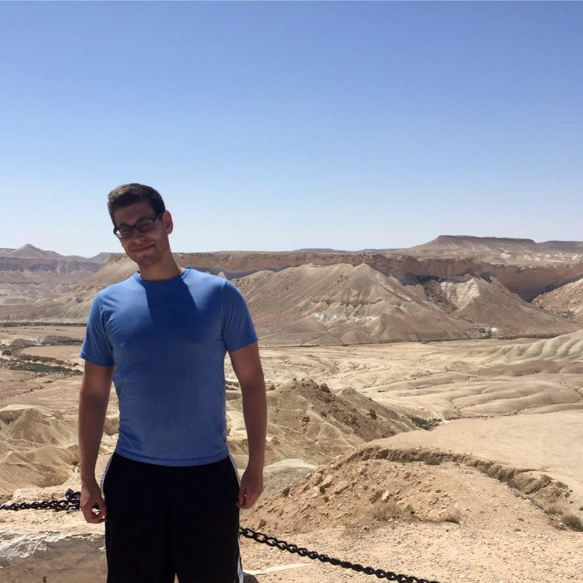
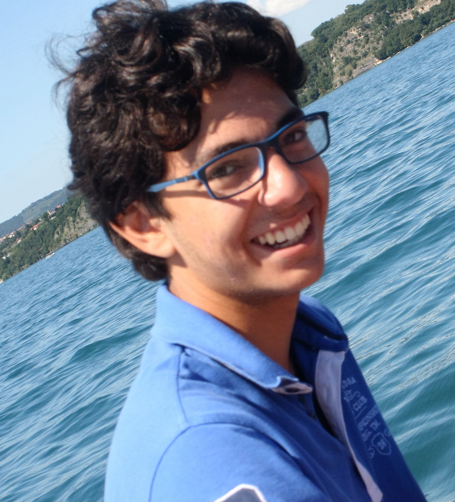
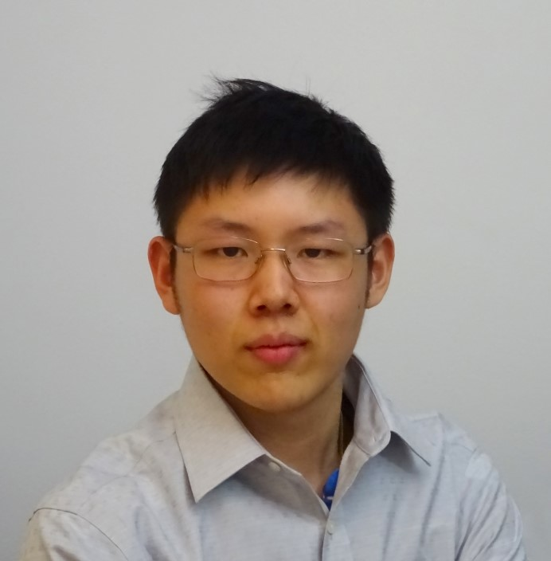
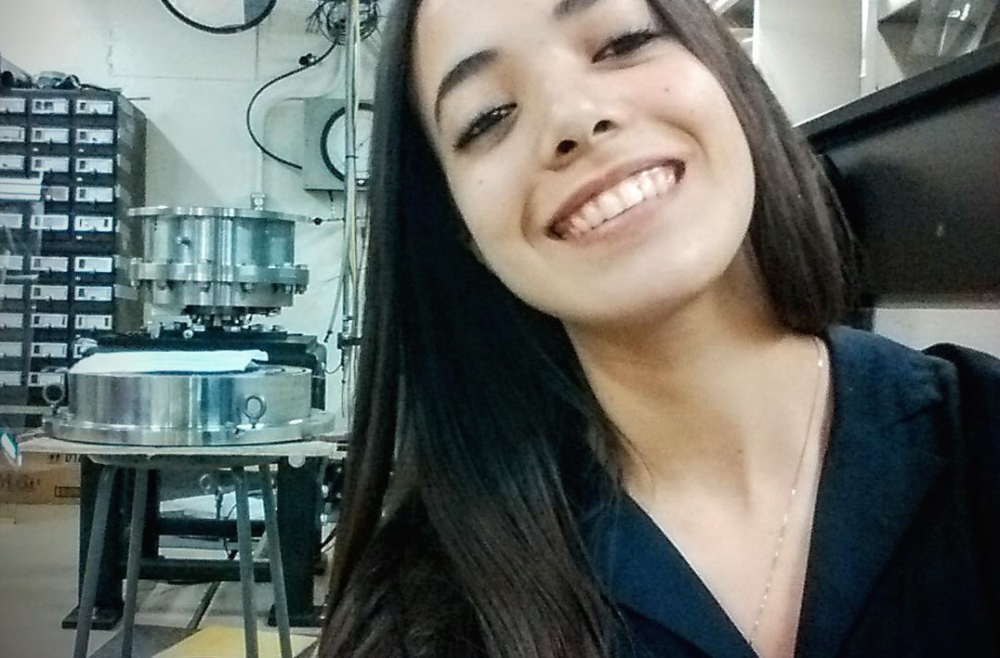

|
|
Yiming Sun
Chemical Engineering Tutor
Hi,
It is my pleasure to introduce myself, my name is Yiming Sun and people call me Sunny because of my family name. I am currently a U2 student enrolled in chemical engineering and I am passionate about what I am studying. I have 4 years of tutoring experience, so I think I could provide you with a different point of view on the harder U1 classes of chemical engineering. Enough of the serious stuff, after helping you through your assignments, I will lowkey teach you how to make Chem Eng great again. #semicasual
- Yiming Sun
|

|
Eric Zimmermann
U1 Math Tutor
My name is Eric and I'm a U2 electrical engineering student who can't stop dreaming about calculus, which is why this semester I will be tutoring U1 math.
I've been a peer tutor at Vanier College and loved helping others which is why I needed another go at McGill so come by for all your math related need!
-Eric
|
|
Hugo St-Amant
U1 Math Tutor
You think MATH stands for Mental Abuse To Human? Come to meet me at EPTS and I will make you change your mind! I'm a U3 mechanical engineering student and Tutor for the U1 Math (262-263-264). I assisted to a lot of sessions form EPTS when I was in first year so now I try to help other students. Even if you do not have specific questions, don't be shy to come!
- Hugo
|
|
Hayley Jacobs
U0 Math Tutor
Hi everyone!
My name is Hayley and I am one of the U0 math tutors this year. I'm a U1 Civil Engineering student and this is my second year at McGill. I'm from the Toronto area, but I love Montreal for the sense of culture and new places to explore. In my free time you'll find me out running, playing the guitar, or most likely, sleeping. I know that the U0 math courses aren't the most exciting courses you'll take at McGill, but they are super important ones to understand. I'm really friendly and would be happy to help you out with any problems or questions you have, so don't hesitate to drop by during my hours!
- Hayley
|

|
Alain Chelala
U0 Math Tutor
Hi!
My name is Alain and I am the U0 Math Tutor for this semester. I am a U1 Civil Engineering student, also minoring in Finance. Since my first year, I have been involved with the Plumber’s station committee and the Engineers Without Borders. I love everything that’s related to filming, television, theatre (…), so if you are also interested, DEFINITELY come talk to me!
I used to tutor my friends since High School, sometimes turning my dining room into tutorial classes to make sure we were all on the same page. U0 Math are not always easy courses to handle, but with a bit of practice, understanding the material is within everyone’s reach. I am here to make things simpler, so don’t hesitate to ask for help with your problem sets or homework! Your questions are always welcome!
- Alain
|

|
Jason Wu
Civil Engineering Tutor
Hello all,
My name's Jason and I'm a U3 civil engineering student specializing in structural design. I moved to Montreal from Ottawa, Ontario, and my interests include cooking, paper crafts, and exploring digital multi-media. This past summer I've experienced working as a researcher as part of the SURE program. I am also involved with McGill's Concrete Canoe Team and with the Computer Taskforce. The civil courses that I cover are CIVE 205, 206, 207, and 290. Back in the days, my classmates would often ask me for help with assignments, and now I welcome you too to come in with all your questions.
Have a great semester!
- Jason W
|
|
Max Shen
Materials Tutor
Hi, my name is Max Shen, a U3 materials engineering student. I always had a great passion in tutoring peer students and helping them through the hardest time. I was referred by the previous MIME tutor to EPTS and I thought there was no harm to give it a try. However, the passion coming from students astonished me. I could not recall how many times the room was packed and people had to drag chairs from computer lab to fit in. I was always surrounded by a group of students asking questions that I never asked myself before. So I returned as your 2016-2017 MIME tutor. It is a great pleasure to meet all of you and give a hand to the future engineers!
-Max
|
|
Garret Holt
ECSE Tutor and Manager
Hi guys!
My name is Garret, and I am really looking forward to being a tutor for EPTS again. I am a third year electrical engineering student and I remember the trauma I experienced from the circuits quizzes. They are rough and I would love to be there to help you out with anything you guys need. I really enjoy tutoring and recommend that you drop bye and say hello!
- Garret
|

|
Jihane
PDE Tutor
Hi! I am the tutor for MATH271- PDE's, and I am a U3 in Mechanical Engineering. I actually spent my first 3 semesters at McGill as an honours math student. So yes, if you didn't guess it, I love math, and I think everyone can understand algebra and even enjoy it! I come from Morocco, and I love how diverse McGill is. I am very involved with Engineers Without Borders, and I am working with the Shock Wave Physics Group on nuclear fusion. I love backpack travelling, hiking, playing guitar, and of course solving algebra problems…
- Jihane
|
|
Nick Pant
Physics Tutor
My name is Nick, I am the U0 Physics Tutor, and I'm currently in U2 Electrical Engineering. Freshman physics courses lay out the fundamentals upon which your future engineering courses will be built so it's very important that you master the concepts. And I am here to help!
A little about me: I was born in Nepal, have lived in the United States, but came to Montreal from Oakville, Ontario. I love avocado smoothies, sweet potatoes, and binging on Wikipedia articles. I also think physics is really cool, especially when it's used to solve applied problems in engineering. Currently, I'm in a lab, working with nanoelectronic materials to produce solar fuels.
If you ever struggle with physics, come to me for help!!
- Nick
|
|
Karim El-Baba
Comp Tutor
My name is Karim El-Baba, and I am the ECSE tutor for this fall. I am a 4th year Electrical engineering major, with a software engineering minor. My experience with programming ranges from industry experience to campus engineering design teams, to personal projects, and just plain assignments. I came to Montreal 5 years ago from my home town of Beirut, Lebanon, and it has been an adventure ever since. My time at McGill has been unique, as I met the best and the brightest, and had the pleasure of working with renowned professionals. I know programming can be frustrating when you're first starting off, but I am here to help, and hopefully make writing code easier and more enjoyable.
- Jad
|